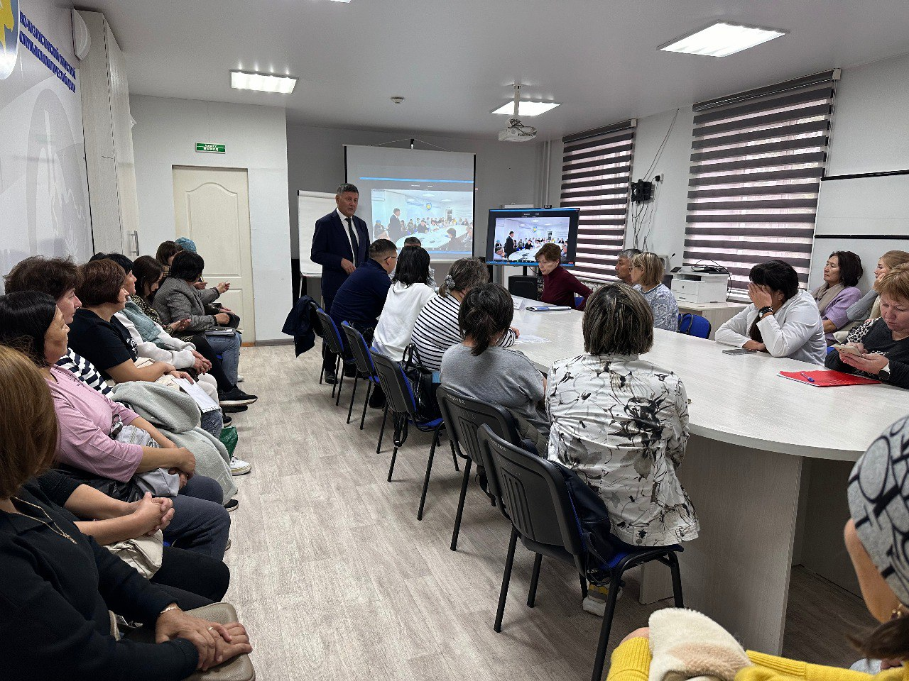

Жаңалықтар
Фтизиопульмонология орталығында ҚР Еңбек және халықты әлеуметтік қорғау министрлігінің ШҚО бойынша Мемлекеттік еңбек инспекциясы басқармасының басшысы Бақытбек Қизатовпен бұйрықтар нормаларын түсіндіру бойынша кездесу өтті. ШҚО бойынша Мемлекеттік еңбек инспекциясы басқармасының бас маманы Асланбек Қабаев, ШҚО бойынша еңбек комитеті департаментінің зейнетақы және әлеуметтік қамсыздандыру бөлімінің басшысы Марина Шаронова, Еңбек қорғау жөніндегі республикалық ғылыми-зерттеу институты ЖШС директоры Талғат Немеренов және ШҚО ДБ жоспарлы бөлімінің бас маманы Нәзира Түменбаева.
18 Қыркүйек 2024

Орталық ұжымы ҚР Еңбек және халықты әлеуметтік қорғау министрлігінің 2023 жылғы 24 мамырдағы № 170 «Міндетті кәсіптік зейнетақы жарналарын төлеу жөніндегі агенттер өз қаражаты есебінен олардың пайдасына міндетті кәсіптік зейнетақы жарналарын жүзеге асыратын еңбек жағдайлары зиянды жұмыстармен айналысатын қызметкерлердің өндірістерінің, жұмыстарының, кәсіптерінің тізбесін бекіту туралы» бұйрығы бойынша өз сұрақтарына толық жауап алды. (МКЗЖ) "және" Жұмыс берушінің қаражаты есебінен кәсіптік төлемді жүзеге асыру, тоқтата тұру, қайта бастау және тоқтату қағидаларын бекіту туралы "ҚР Еңбек және халықты әлеуметтік қорғау министрлігінің 2023 жылғы 26 желтоқсандағы № 526 бұйрығына өзгерістер мен толықтырулар енгізу туралы
